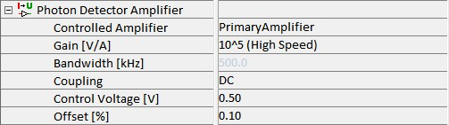

|
光子探测器放大器
|
此参数组控制放大器，例如用于模拟 PMT 的放大器。参数如下：

受控放大器
可以选择放大器。通常情况下只有一个放大器可用。
增益 [V/A]
此参数定义放大倍数。还可以在低噪声和高速之间进行选择。
带宽 [kHz]
只读参数，显示根据所选增益确定的带宽（kHz）。
耦合
此处可以选择 AC 或 DC，具体取决于应放大的电压类型。对于模拟 PMT，应选择 DC。
偏移 [%]
此参数用于补偿偏移。这是出厂定义的，仅在确实必要时才应更改。
控制电压 [V]
PMT 的控制电压改变其灵敏度。可以在 0 V 到 1.2 V 之间调节。